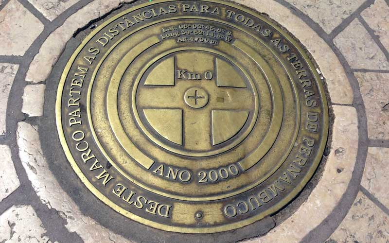

Bem-vindo a EuroTour
Marco Zero - Recife
O Marco Zero em Recife é um dos destinos históricos mais importantes do nordeste do país. A região reúne atrações históricas e culturais, centro de artesanato e ótimos restaurantes. Além disso, é o principal local do carnaval de Pernambuco, reunindo música, alegria e muita festa. A seguir, saiba mais detalhes sobre o destino.
Onde Fica

O Marco Zero compreende a região da Praça Barão do Rio Branco, que está situada no município de Recife, no estado de Pernambuco. A atração fica próxima do bairro do Recife Antigo, e está a menos de 10 km de Olinda.
Como chegar?
Existem muitas formas de chegar ao Marco Zero, uma vez que o local está situado na região Metropolitana de Recife. De carro, basta partir do centro de Recife, através da Rua Riachuelo. O trajeto é curto e dura aproximadamente 20 minutos. Também é possível ir de ônibus, as principais são a 1973, 1992, 1994, 2441, 346, 521 e 642. Além disso, utilizar aplicativos de corrida são ótimas alternativas para andar na cidade. Por fim, você ainda pode contratar agências de turismo. Assim, é possível aproveitar melhor a região e explorar outras atrações locais.
texto extraído de https://www.viajali.com.br/marco-zero-recife/